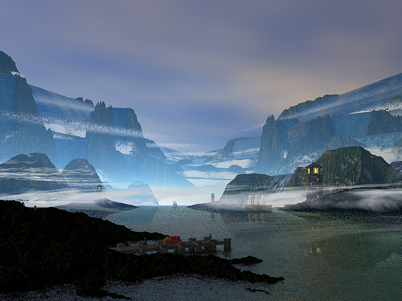

SinkWorld is a land sunk beneath the level of the sea but not submerged. Waterfalls surrounding pour the sea into SinkWorld yet do not drown it. Strong currents draw passing ships towards SinkWorld and over the waterfalls. Not many escape. Some survive but they remain cut off from the events of the outside world.
The concept behind the SinkWorld software development plan is to simplify the issues involved in working on Scintilla by developing pieces of functionality in isolation, in a synchronous context, where there are no callbacks, threads or GUI interactions. This should make it easier to work on performance and testing by not needing to consider the effects of the containing environment which is where much of the complexity in UI components comes from. Once these pieces are well tested by a unit testing framework and efficient, they can be integrated into larger components that require more complex interactions.
Some features require significant processing time so may be performed be a series of incremental steps rather than as indivisible actions if no sufficiently fast technique can be found. This may include such tasks as lexical analysis of source code and line wrapping. This is an intermediate area between the completely isolated and the completely integrated and may be worked on as part of SinkWorld.
I like code to have evocative names and like to use metaphors when thinking through stuff even if they seem very separated from the problem domain. Often unexpected associations occur leading to new ideas.
Sunken lands are a recurring theme in myth - Ys and Atlantis being well known examples. Often associated with the fall of a land because of the hubris of the inhabitants.
Graphics Copyright 2001 Stephen Neal - Virtually There. Stephen is also responsible for initiating the fantasy story line.